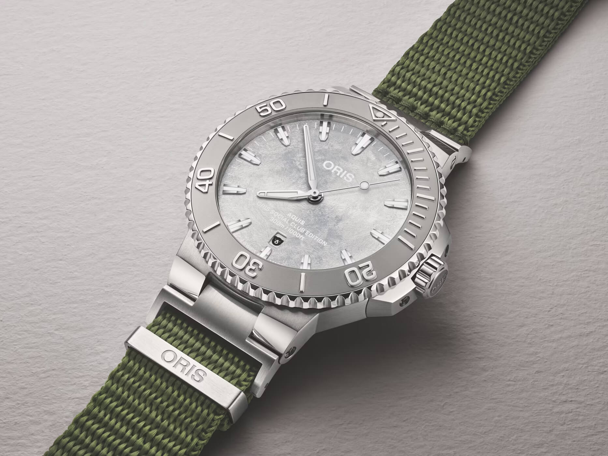
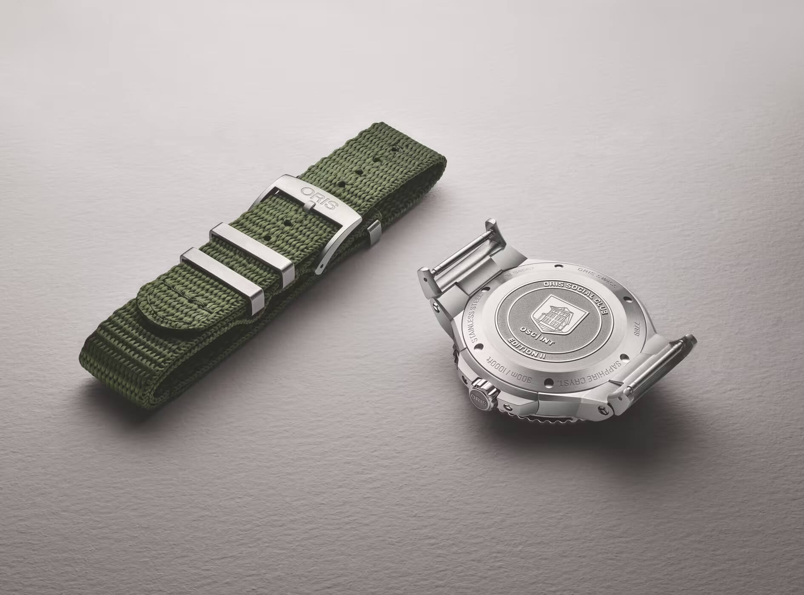

Oris Finally Ships Lug Adapters for the Aquis, and They Use Spring Bars
The Oris Aquis has always had a proprietary lug design. If you wanted to put a NATO or a rubber strap, or really anything not sold by Oris, you were out of luck. People have been complaining about this on forums since at least 2017. There was a third-party solution that worked well but ran about $130 and needed a special tri-wing screwdriver. Oris did nothing. That has now changed, but buried inside a limited edition.
 Nenad Pantelic • September 12, 2026
Nenad Pantelic • September 12, 2026

The new Oris Social Club Edition II (ref. 01 733 7789 4121-Set) is based on the Aquis Date Relief 43.5mm and ships from September 2026 with a pair of stainless steel adaptor endlinks already fitted to the case. The adapters slot into the Aquis's integrated lug channel and give you standard spring bars on the other side. The watch comes on an olive green NATO threaded through those spring bars. It is the first time in over a decade that Oris has put an Aquis on a NATO.
Here is what matters for strap people: because the adapters end in spring bars and not a proprietary attachment, they should work with any pass-through strap (NATO, ZULU, single-pass) and also with regular two-piece straps, as long as you match the 23mm interhorn width listed on the product page. Oris has not published any specs for the adapters on their own, and has not said anything about selling them separately.

The Social Club Edition II is limited to 500 unnumbered pieces, priced at CHF 2,100 (USD 2,600), and sold exclusively through oris.ch. The watch itself has a frosted white-silver dial, the Aquis Relief's steel bezel insert with the diving scale in relief, and a caseback engraved with the Oris factory outline and "OSC | INT" markings. Inside is the Oris Caliber 733-1, a Sellita SW200-1 base with 41 hours of power reserve.
No word from Oris on whether the adapters will ever be sold as a standalone accessory or show up on other Aquis references. For now they only come with this 500-piece club edition. But the proof of concept is there, and it comes from Oris itself.